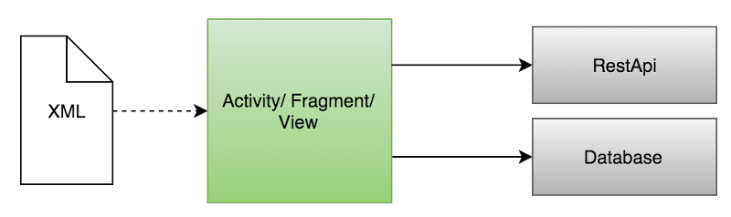
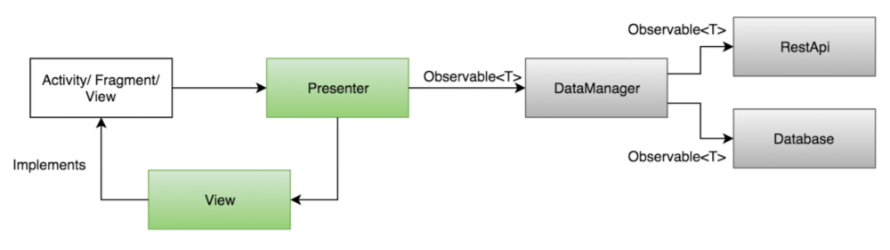
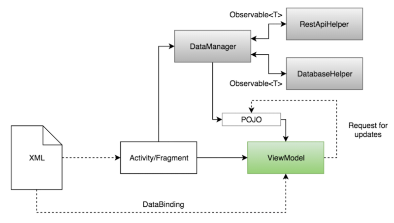

当去年谷歌IO大会上宣布Data Binding Library时，我就认识到了“oh man, this is the next big thing in Android development”。是的，在发布后的几周里炒的很热，但是到现在又归于平静了。很多开发者都致力于MVP以及Rx系列的架构中，以至于他们没时间去研究数据绑定库。我认为，你不能只是会使用数据绑定库，你需要花些时间去学习它如何架构在你的应用中，并且利用它写出高质量的可测试的安卓应用。
@Josip Jurisic
原文地址：https://medium.com/cobe-mobile/architecting-android-with-data-binding-and-mvvm-in-mind-8874bbec0b0d#.erebxh94l本篇文章是作者对安卓项目不同架构的个人看法，当然也会分析哪种架构更适合使用数据绑定库。
Model-View-Controller (God objects)
大部分安卓应用都是采用MVC设计模式，该模式下会在一个Activity或者Fragment中产生超过1000多行的代码，并且代码看上去非常的凌乱丑陋。
在这种情况下，每个Activity/Fragment会扮演着Controller的角色（点击事件、item事件、text watcher等）以及Model的角色（RestApi调用、数据库调用、业务逻辑等）。XML布局充当View角色。
安卓中典型的MVC架构
我们很清楚大部分开发者放弃使用这种模式就是因为项目中需要在这些类中实现新特性。
MVC架构可读性差、可测试性差导致很多开发者放弃使用该架构。
Model-View-Presenter
MVP架构模式是我看到目前比较好的应用在安卓上的架构模式。随着大家的关注该模式也是越来越流行，因为该架构的每一层只关心自己这一层的任务，解放了MVC下的耦合性。
安卓一种优秀的架构模式（MVP+Rx）
上图中，DataManager就是Model层，它持有RestApis（例如Retrofit）、database（SQLite）等对象。Model层的一个典型的场景就是从后台抓取数据，或者保存数据或者为Presenter传递数据。
|
|
Presenter层位于View层与Model层的中间。Presenter不关心Activity/Fragment/View做什么，它只持有Model层的引用以及View层的引用，如下：
|
|
View层，也就是看得到摸得着的UI界面通常由XML/Activity/Fragment以及View视图组成。Activity/Fragment持有一个Presenter对象的引用，并且在用户交互过程中会调用相应的方法。
|
|
MVP架构可读性好、可测试性好，很多开发者愿意使用该架构。
Model-View-ViewModel
该架构是应用数据绑定库真正地方。MVVM架构将UI逻辑从业务逻辑中分离出来。
安卓中mvvm的架构实现
在这个例子中，DataManager是Model层，和MVP很相似，DataManager持有RestApi（例如Retrofit）、数据库（SQLite）等实例。应用场景是从后台获取数据或者保存数据。它与MVP的Model层的不同点是：MVVM架构下的DataManager会返回Activity/Fragment的相应来代替MVP中的Presenter层。这就意味着业务逻辑的变化会直接影响Activity/Fragment。
|
|
View层由Activity/Fragment以及绑定对象组成。典型的场景就是Activity从后台请求数据，获得数据（POJO）并且将它传递给ViewModel层。ViewModel层使用这些新的数据更新UI。
|
|
XML文件：
|
|
ViewModel层位于View层与Model层之间。它将从Model层收到的数据用于更新View层视图。除此之外，它还操作着模型的状态（POJO对象中的字段），并将这些状态作为视图层变化的一个结果。
|
|
MVVM架构可读性一般、可测试性一般，很多开发者喜欢使用该架构。
通过以上总结，因为我还在学习不同的架构模式，所以就我个人观点而言使用MVP不会对项目未来需求造成影响，很多开发者也是持有这个观点。开发安卓应用时，MVP模式是很自然的架构模式，它的可测试性非常好、业务逻辑也是单独隔离。所以使用它不会有太大的麻烦。